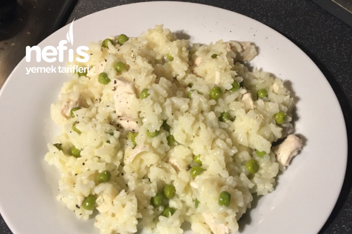

Tavuk Risotto
İtalyan pirinci ve tavuğun beyaz şarapla birleşmesiyle ortaya çıkan bir tarif.
Tarif: Esin Taylor

- Kaç Kişilik:
4-6 kişilik.
- Hazırlama Süresi:
10dk
- Pişirme Süresi:
40dk
Tavuk Risotto Tarifi İçin Malzemeler
- 2 tane tavuk göğsü
- 350 gr Arborio pirinç (italyan pirinçi)
- 1 büyük soğan
- 3 diş sarımsak
- 1 kase bezelye ( dondurulmuş)
- 1 yemek kaşığı tereyağ ve zeytinyağı
- 1 tavuk bulyon
- Yarım su bardağı beyaz şarap ( yoksa eğer 2 yemek kaşığı beyaz şarap sirkesi )
- Karabiber, tuz
Tavuk Risotto Tarifi Nasıl Yapılır?
- Tavuk göğsünü küçük kuşbaşı doğruyoruz ve derin bir tencereye biraz zeytinyağı koyarak tavukları ekliyoruz, karıştırıyoruz, tencerenin kapağını kapatıp altını açıyoruz pişiriyoruz, tavuklar suyunu salıp çektikten sonra tencerenin altını kapatıyoruz.
- Tavuklar yanmayacak beyaz olacak, o yüzden sakın kavurmayın, suyunu biraz çekmesi yeterli.
- Tavuk hazır, bir köşede dursun.
- İlk olarak 500 ml kaynamış suya tavuk bulyon atıp karıştırarak eritiyoruz, bir kösede hazır dursun.
- Daha sonradan 500 ml sade kaynamı su ekliyoruz, pirinçler suyunu çok çektiği için yaklaşık 1 litreye yakın kaynamış su kullanıyoruz.
- Tencereye tereyağ ve zeytinyağını koyuyoruz, tereyağı eridikten sonra küçük kare şeklinde doğranmış soğanları ekliyoruz, soğanlar yanmamalı ve pembeleşmeyecek.
- Sonra küçük doğranmış sarımsakları ekliyoruz ve sürekli karıştırıyoruz.
- Arkasına pirinçleri ekliyoruz ve bir kaç dakika pişiriyoruz. 📌
- Burada önemli olan yemek pişene kadar sürekli yemeği karıştırmak. Silikon spatula ile yemeği yaparsanız daha rahat olur. Dibini tutturmadan sürekli karıştırın.
- Şarap yada sirkeyi ekleyip karıştırıyoruz suyu biraz çekilmeye başlayınca tavuk suyunu eklemeye başlıyoruz, pirinçler suyunu çektikten sonra tekrar tavuk suyunu ekliyoruz, bu şekilde kaynamış su bitene kadar ekliyoruz karıştırıyoruz.
- Son defa kaynamış suyu koymadan önce pişen tavukları ve dondurulmuş bezelyeyi ekliyoruz ve son suyu da koyduktan sonra iyice karıştırıyoruz bezelyeleri ezmeden, yemek biraz lapa gibi olacak.
- Altını kapatıp dinlenmeye alın, ve üzerine karabiberle servis yapın.
Enjoy your meal 🍚